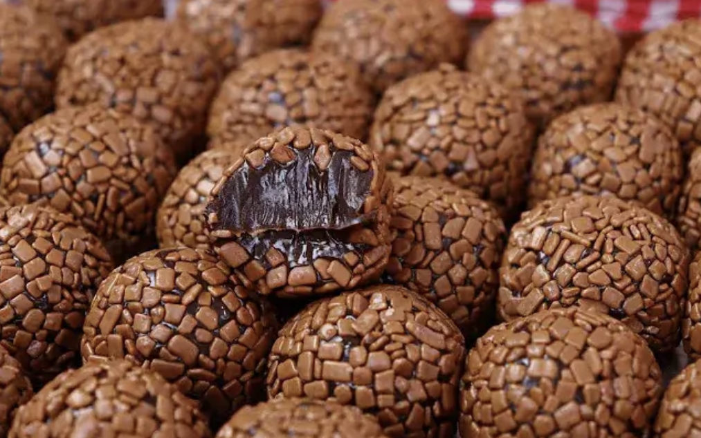

O que voce vai precisar:
- Leite condensado
- Manteiga
- Achocolatada da sua preferencia ou chocolate em pó
- Granulado (opcional)
Modo de preparo:
Em uma panela, coloque leite condensado , o chocolate em pó / achocolatado e a manteiga .
Leve ao fogo baixo, mexendo sempre... continue mexendo até a mistura desgrudar do fundo da panela (aproximadamente 10min).
Retire do forno e deixe esfriar completamente. Unte as mãos com um pouquinho de manteiga e enrole os brigadeiros. Passe o granulado e coloque em forminhas.
Dicas:
Se quiser um brigadeiro mais amargo, use cacau 100% no lugar do chocolate em pó ou achocolatado.
Pode ser servido em potinhos também, como brigadeiro de colher (é só parar de cozinhar um pouco antes de dar o ponto de enrolar).
